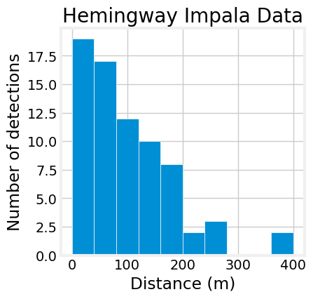

import pymc as pm
import pytensor.tensor as pt
import matplotlib.pyplot as plt
import arviz as az
import numpy as np
plt.style.use('fivethirtyeight')
plt.rcParams['axes.facecolor'] = 'white'
plt.rcParams['figure.facecolor'] = 'white'
x_observed = np.array(
[71.933980, 26.047227, 58.474341, 92.349221, 163.830409, 84.523652
,163.830409, 157.330098, 22.267696, 72.105330, 86.986979, 50.795047
,0.000000, 73.135370, 0.000000, 128.557522, 163.830409, 71.845104
,30.467336, 71.073909, 150.960702, 68.829172, 90.000000, 64.983827
,165.690874, 38.008322, 378.207430, 78.146226, 42.127052, 0.000000
,400.000000, 175.386612, 30.467336, 35.069692, 86.036465, 31.686029
,200.000000, 271.892336, 26.047227, 76.604444, 41.042417, 200.000000
,86.036465, 0.000000, 93.969262, 55.127471, 10.458689, 84.523652
,0.000000, 77.645714, 0.000000, 96.418141, 0.000000, 64.278761
,187.938524, 0.000000, 160.696902, 150.453756, 63.603607, 193.185165
,106.066017, 114.906666, 143.394109, 128.557522, 245.745613, 123.127252
,123.127252, 153.208889, 143.394109, 34.202014, 96.418141, 259.807621
,8.715574]
)
fig, ax = plt.subplots(figsize=(4,4))
ax.hist(x_observed, edgecolor='white')
ax.set_title('Hemingway Impala Data')
ax.set_ylabel('Number of detections')
ax.set_xlabel('Distance')
ax.grid(False)
plt.show()